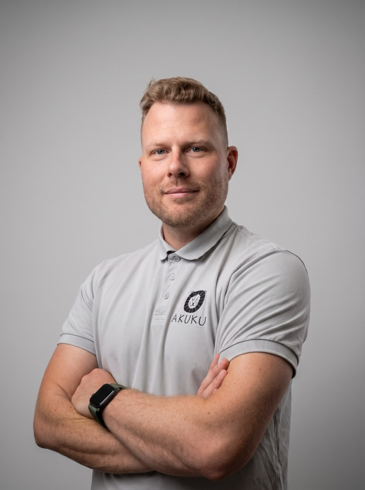

O mnie
Mateusz Brzeziński
mgr fizjoterapii

Jestem magistrem fizjoterapii z 9-letnim doświadczeniem, specjalizującym się w pracy z dziećmi, od pierwszych dni życia aż do końca wieku szkolnego. Ukończyłem studia II stopnia na Akademii Wychowania Fizycznego i Sportu w Gdańsku.
Od początku kariery wspieram zarówno niemowlęta z drobnymi trudnościami rozwojowymi, jak i dzieci z niepełnosprawnościami. Obecnie pracuję w Ośrodku Wczesnej Interwencji w Gdańsku. Doświadczenie zdobywałem również w Terapeutycznym Punkcie Przedszkolnym oraz w Ośrodku Rewalidacyjno-Edukacyjno-Wychowawczym.
W swojej pracy szczególnie cenię komfort i poczucie bezpieczeństwa dziecka, a każdą terapię dostosowuję indywidualnie do jego potrzeb.
Doświadczenie
- Ośrodek Wczesnej Interwencji, Gdańsk
- od 2023
- Terapeutyczny Punkt Przedszkolny
- wcześniej
- Ośrodek Rewalidacyjno-Edukacyjno-Wychowawczy (OREW)
- wcześniej
- Akademia Wychowania Fizycznego i Sportu w Gdańsku
- studia II stopnia
Tłumaczę, słucham i wspieram, aby rodzice nie czuli się pozostawieni sami z problemem.
Moim celem jest, aby dziecko rozwijało się harmonijnie, z radością odkrywało swoje możliwości, a rodzice mieli praktyczne wskazówki, jak wspierać je w codziennym życiu. Zawsze staram się zrozumieć źródło problemu i dobrać terapię do realnych potrzeb pacjenta.
Mateusz Brzeziński, mgr fizjoterapii
Poznajmy się na wizycie
Pierwsza konsultacja to także okazja, żebyś sprawdził, czy mój sposób pracy Ci odpowiada.